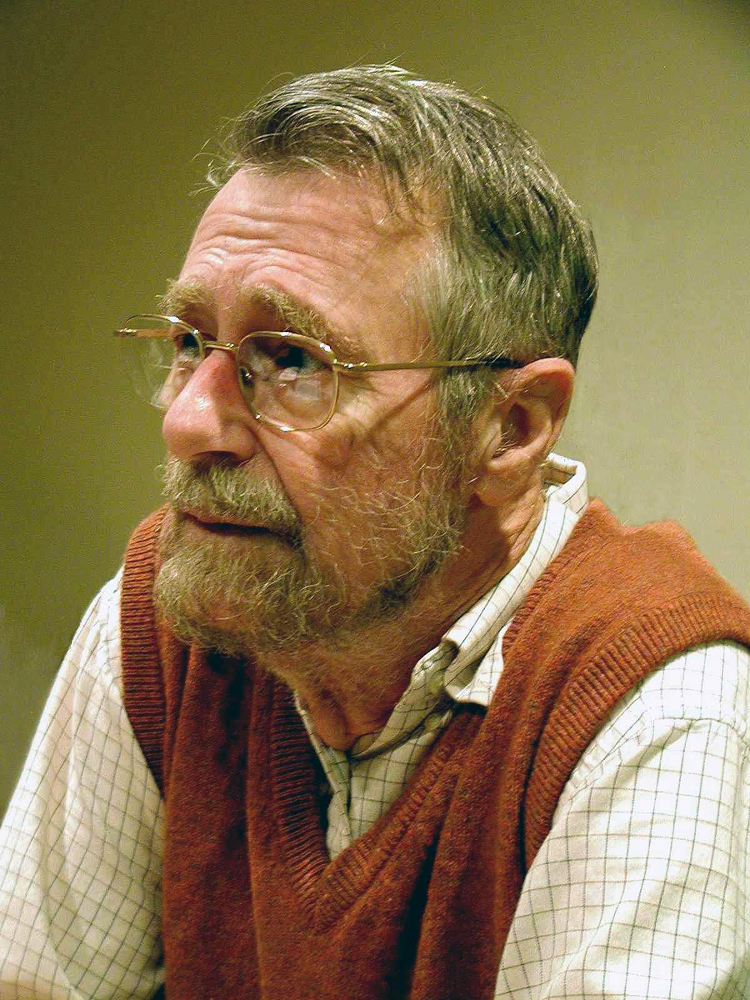

de biografie van Edsger Dijstra
Edsger Wybe Dijkstra studeerde bij het Gymnasium Erasmianum aan de Leidse universiteit, waar hij in 1951 zijn diploma haalde voor wiskunde en natuurkunde, en in 1956 afstudeerde in de theoretische natuurkunde.Van 1952 tot 1962 werkte Dijkstra bij het mathematisch centrum te Amsterdam als wetenschappelijk programmeur, waar hij was aangenomen om de ARRA I te programmeren. Later ontwikkelde hij ook de programmatuur voor de ARMAC. In zijn tijd bij het CWI werkte hij onder meer aan een compiler voor de programmeertaal Algol-60. Hij schreef zijn proefschrift in 1958. Een jaar later ontwikkelde hij het naar hem vernoemde kortstepad-algoritme, de routeplanner van nagenoeg alle navigatiesystemen zoals die van TomTom.
Vanwege de diepe indruk die hij als wetenschappelijk programmeur maakte, werd Dijkstra in 1962 benoemd tot hoogleraar aan de technische hogeschool Eindhoven, waar hij tot 1984 bleef werken. In 1972 ontving hij de Turing award voor zijn bijdragen aan de informatica in de jaren vijftig. Vanaf 1982 was hij ook een fellow van de Burroughs Corporation.
In 1984 verruilde Dijkstra de universiteit in Eindhoven voor de universiteit van Texas te Austin in de VS. Daar zette hij zijn werk voort, vaak nog in samenwerking met zijn oud-collega's en studenten uit Nederland. Dijkstra bleef daar werken tot zijn emeritaat in 1999. Dijkstra stierf op 72-jarige leeftijd in Nuenen aan darmkanker.